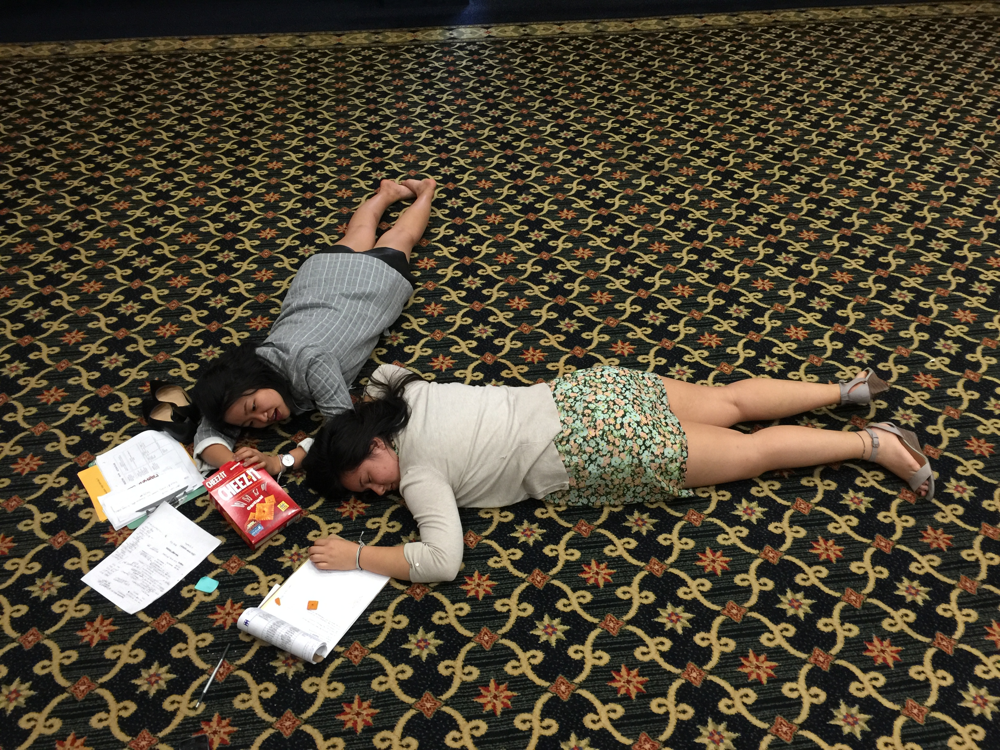

Youth Action Summit of California (or simply put, YASC) is a conference that is offered by a nonprofit organization that I've been involved with in the past. As I sat under the yellow fluorescent lighting of the Ontario Radission, accompanied by cheap tiled carpet, I couldn't help but ask myself: "What am I still doing here?"
High school is over; It's time for me to move on.
... or so I thought. But there truly is no other organization out there that dedicates effort into educating youth about how much change they can do in the world. I love YASC because of th amazing people it allowed me to meet as well as the growth I have personally experienced through my involvement. Finally, I've come to the conclusion that I'm going to pursue becoming a Gamma.
Youth and Social Impact
It never ceases to amaze me how many delegates emerge from 3 days of total immersion in YASC as community leaders. Some of the trainings that students go through are:
- Presentation Skills
- Project Planning
- Issues Training Workshops
- Vision, Goals, Objectives, Action Plan
YASC was such a transformative experience for me because I was finally able to understand where I want to place myself in the organization's long-term context.
 What the counselors looked like after YASC was done tbh